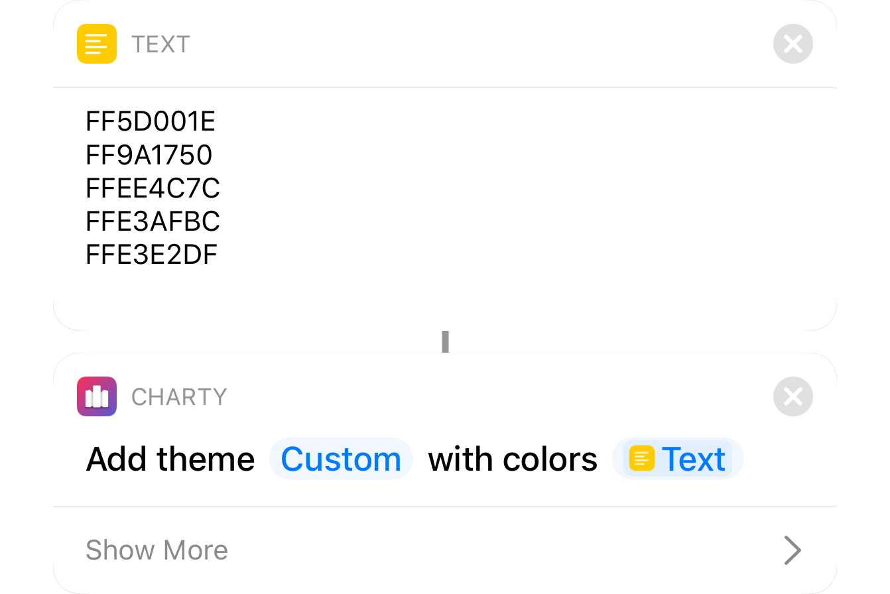
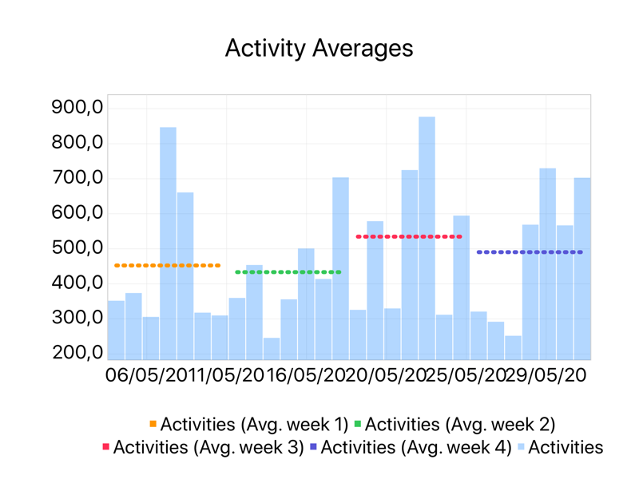
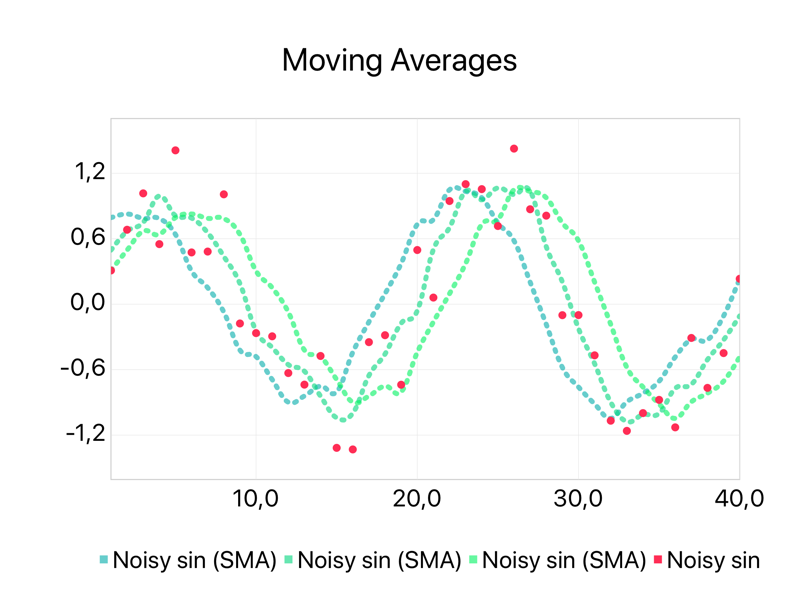
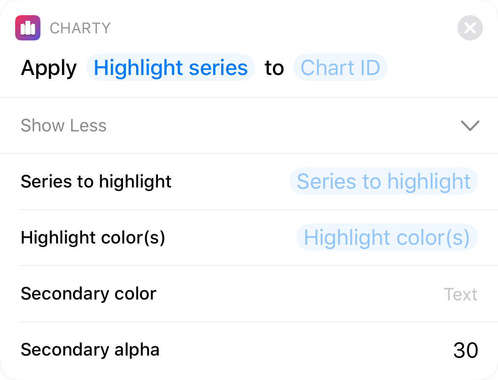
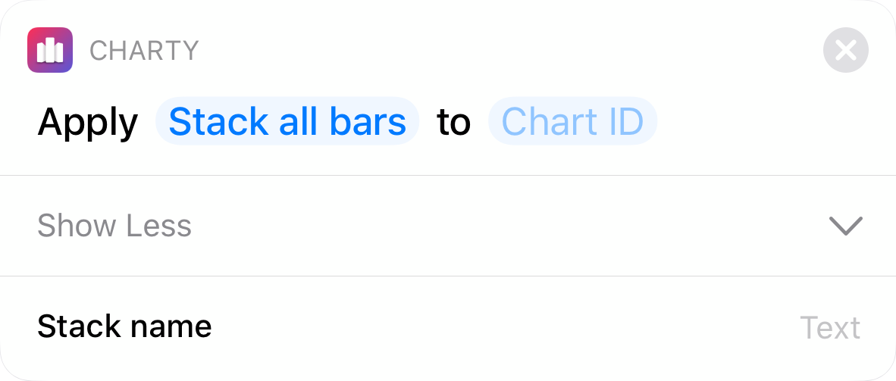
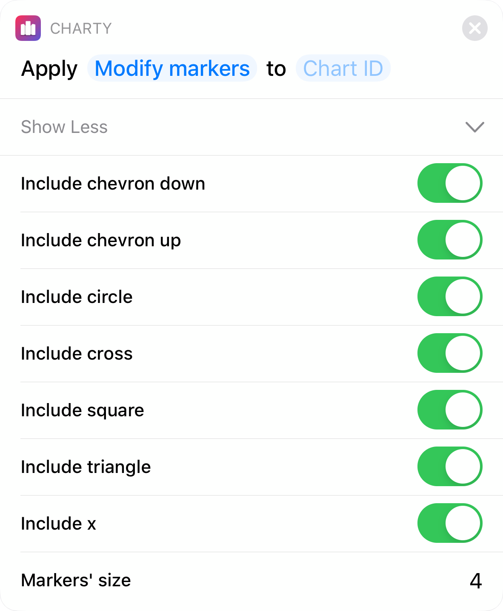
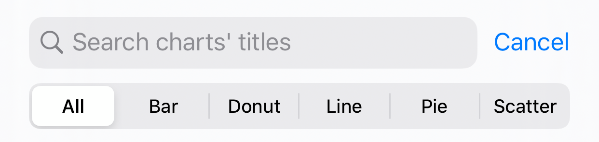

Today marks the release of Charty's first major update: 1.1 – Iris.
Colorful as the rainbow
This update adds a very requested feature to Charty: custom themes.
It's now possible to add custom color sequences to use with any of your charts using one of three different ways: shortcuts, files and url-schemes.

Shortcuts
You can use the new Add Custom Theme action to add a list of colors (represented as hexadecimal codes) as a new custom theme.
As with the style actions, colors can be passed with 3, 6 or 8 characters:
- 3 characters: RGB
- 6 characters: RRGGBB
- 8 characters: AARRGGBB
Files
In the theme selection view, there's a new + icon in the top right corner. Tapping it, will open the iOS file selector, where you'll be able to choose a text file containing a list of colors (represented as hexadecimal codes).
url-schemes
Lastly, you can use the url-scheme below.
charty://add-theme?name=BlGrYeOrRe&baseColors=0&colors=1a76e8,28d475,ffd416,ff6f1d,eb2d40The green part is the theme's name, in blue is a list of colors (represented as hexadecimal codes) separated by commas. Lastly, in orange, is the color selection strategy to use. Accepted values are 0, 3 and 4, and this is useful for gradient themes, to ensure color differentiation when charts have only a few series.
Using this url-scheme, adding a new theme is just a tap away. Here are some examples:
The rise of utility actions
In addition to the already cited Add Custom Theme, Charty 1.1 adds 5 other actions:
- Add Average
- Add Moving Average
- Apply Quick Style
- Style Chart
- Style Donut/Pie Series
The first three actions are part of a new category of actions in Charty: utility actions. The idea here is to condense into a single action things that were already possible with long lists of other actions in Shortcuts, making everything cleaner and clearer.

Add Average
This new action calculates the average of a series' values in a selected period, which might include all values or just a subsection of them. This average value is then added as a new series and all of its styling can be done directly in the action.
In the example, you can see the Add Average action being used 4 times to calculate averages of the user's energy spent in four different weeks.

Add Moving Average
Much like the Add Average action, but this one uses a moving window. Moving averages are commonly used to remove high frequency noise from data, leaving only the macro tendencies. The new series style is completely adjustable directly from this action.
You can also select the centering strategy for the averaging window, as shown in this example where this action was used to add 3 different moving averages with left, center and right centered windows.
Apply Quick Style
This action condenses 3 different actions into one: Highlight series, Stack all bars and Modify markers.
Highlight series
Use this option to dampen or recolor secondary series, highlighting one or more important series.

Stack all bars
Use this option to stack all bar series in a chart into a single stack, instead of applying Style Bar Series to each bar series.

Modify markers
Don't like chevron markers? Use this option to select which markers can be used for your scatter series.

Style Chart and Style Donut/Pie Series
With these two new actions, everything in a chart can be configured through shortcuts.
With Style Chart you can modify a chart's theme, toggle and change the color of the border and grid of a chart, and also change legend, values and labels position.
Style Donut/Pie Series makes it possible to modify a donut or pie chart colors either based on its labels, or using a sequential list of colors.
Search and you shall find

The main chart list now has a search bar, and when it's activated, series filters are shown. This will search any part of the charts' titles, and filter any of the series types they contain.
Wait, there's more
This update removes the necessity to fill the x values parameter when adding bar, line and scatter series. Now, whenever Charty sees a series with this empty parameter, it assumes data is sequential and starts at 1.
For donut and pie charts, in a likewise manner, the values parameter is also now optional. If this happens, Charty gets the labels list and counts the number of each unique label, using this count as the value.
Lastly, 7 new examples have been added showcasing Health data export, using the new utility actions and how to export charts using Shortcuts. Here's the new list:
- Caffeine intake
- Weight chart
- Weight chart premium
- Nutrition charts premium
- Weather forecast premium
- Save Selected Charts To Photos Premium
- Moving Averages Example Premium
The codename
Woah, congratulation on reaching the end of this long post 🙂
I've always loved project codenames. I remember fondly when the Xbox Kinect was called Project Natal (the name of my hometown) and always thought Project Titan was a great name that conveyed the hardship of building an autonomous vehicle.
So I've temporarily decided to use greek mythology to name Charty's major updates, unifying two long time passions: mythology and coding.
Iris was the greek goddess and personification of the rainbow, so it was an easy choice for an update adding so much color to the app.
It's time to work on Charty 1.2, which will either be Hephaestus or Pandora, you'll have to wait and see!